01
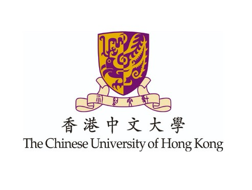
The Chinese University of Hong Kong
CGPA: 3.4 / 4.0
Sep 2023 — Dec 2026
2025 Student of the Year (Quantitative Finance). Full scholarship recipient, 2023–2027.
RESUME / 2026
A quantitative finance student building at the intersection of markets, technology, and uncomfortable problems. This is the longer version of the person behind ZiYik.
01 / Foundation
A finance and risk-management foundation shaped by scholarships, competitions, and a preference for difficult quantitative work.

2025 Student of the Year (Quantitative Finance). Full scholarship recipient, 2023–2027.
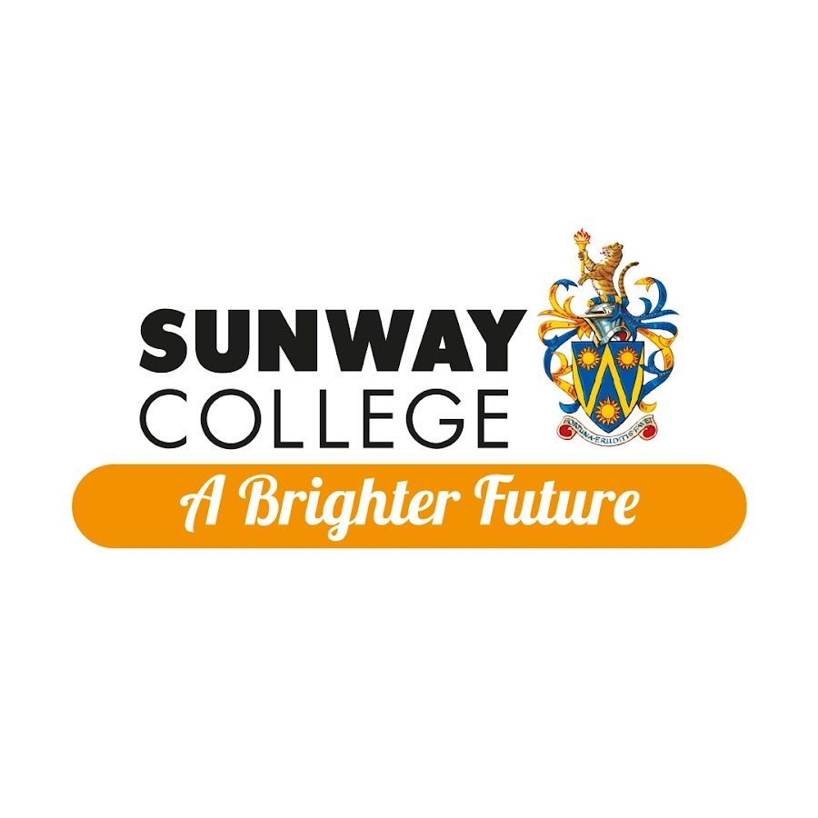
Offers from Imperial College London, NUS, HKU, and HKUST. Jeffrey Cheah Foundation full scholarship recipient.
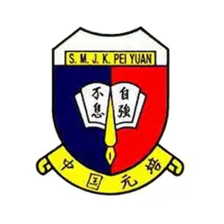
Orchestra conductor, vice president of a uniformed body, and school representative for multiple competitions.
02 / Practice
From interbank markets to valuation models, the work has been a continuous exercise in turning messy information into decisions.
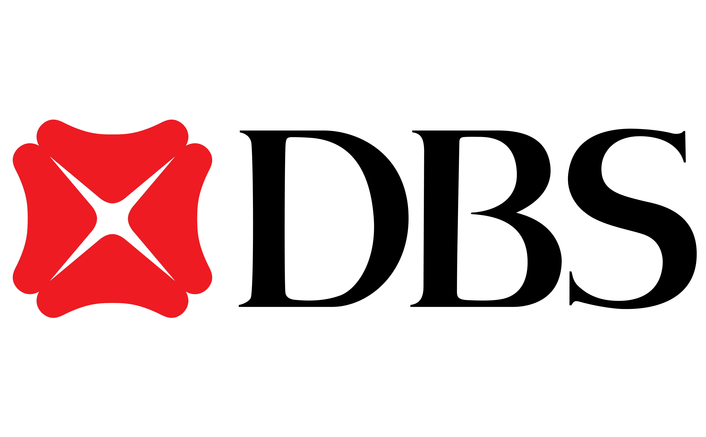
Global Financial Markets
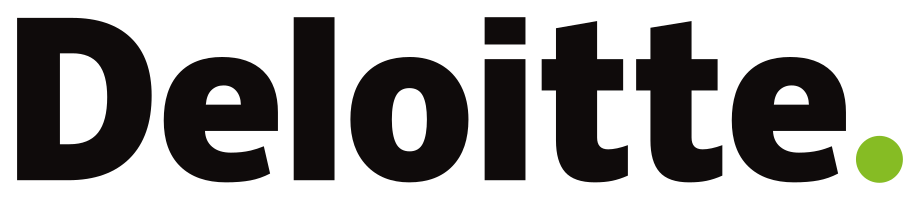
M&A · Valuation & Modelling
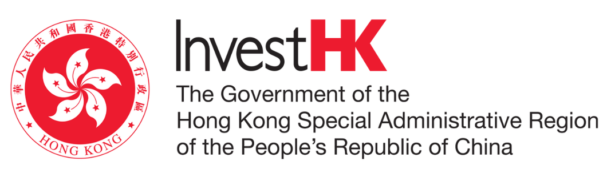
Investment & FDI
03 / Signal
A few outcomes that show how the work compounds: analytical depth, communication, and competitive pressure.
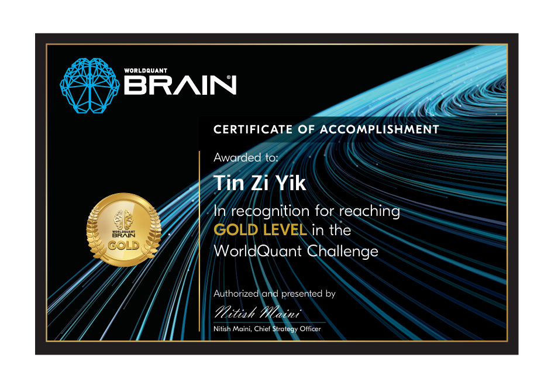
Jan 2025
Gold Medalist and Malaysia Top 20. Designed 6 long-short market-neutral equity alphas with a 1.93 Sharpe ratio and 29.61% return.
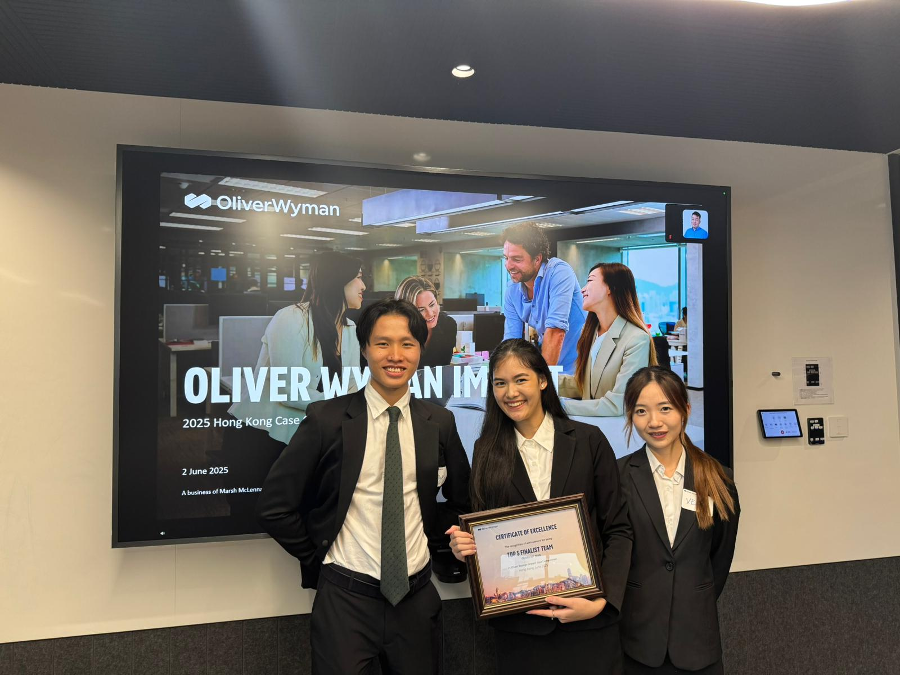
Apr 2025
Top 5 finalist team among 200+ teams in Hong Kong.
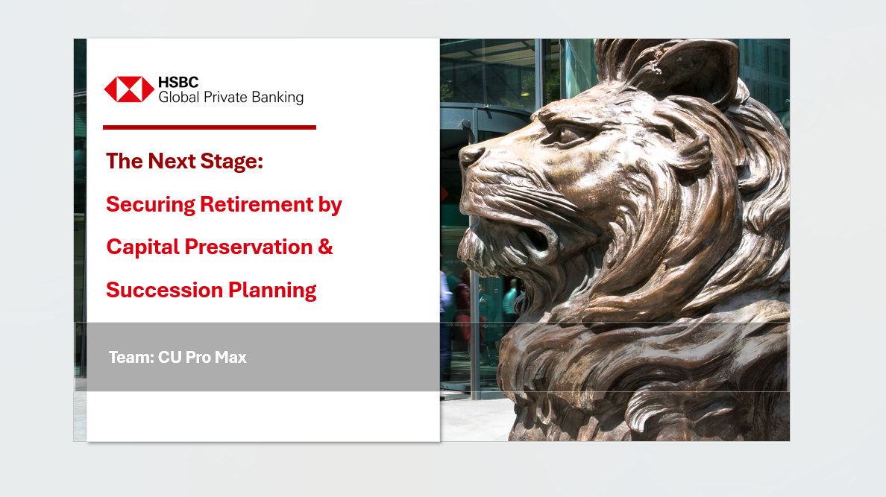
Nov 2024
Global Top 20. Built optimal-risky and minimum-variance portfolios using Python for strategic and tactical asset allocation.
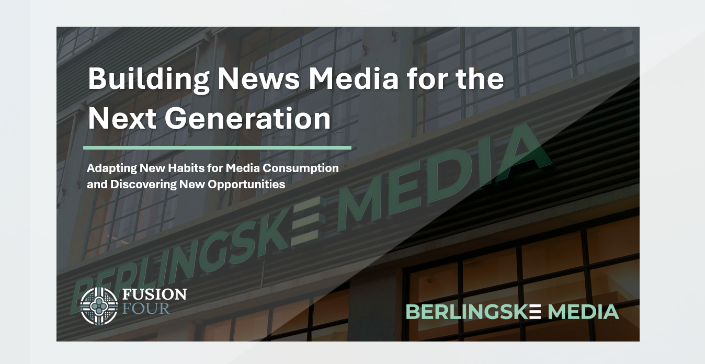
Oct 2024
Global Top 2% in the world's largest case competition, with 3,200+ students from 104 nationalities.
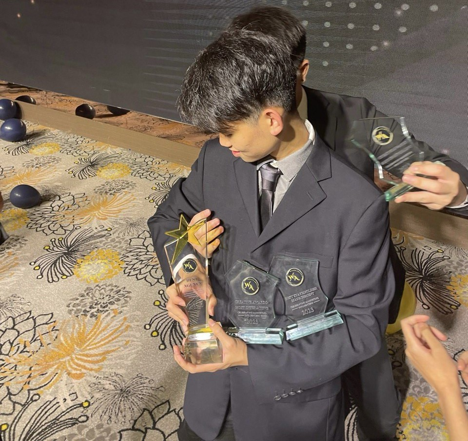
Jul 2023
1st Runner Up overall, plus Best Stakeholder Management and Most Creative awards.
May 2025
Student of the Year for the Quantitative Finance programme as a Year 2 student.
04 / Outside the classroom
The common thread is ownership: build the room, do the research, and make the next decision easier for everyone else.
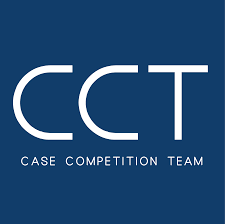
Oct 2023 — Present
Generalist / Financialist / Student Consultant. Conducted due diligence on 70+ case companies, prepared 500+ presentation slides, and won Best Team and Best Speaker in 2024.
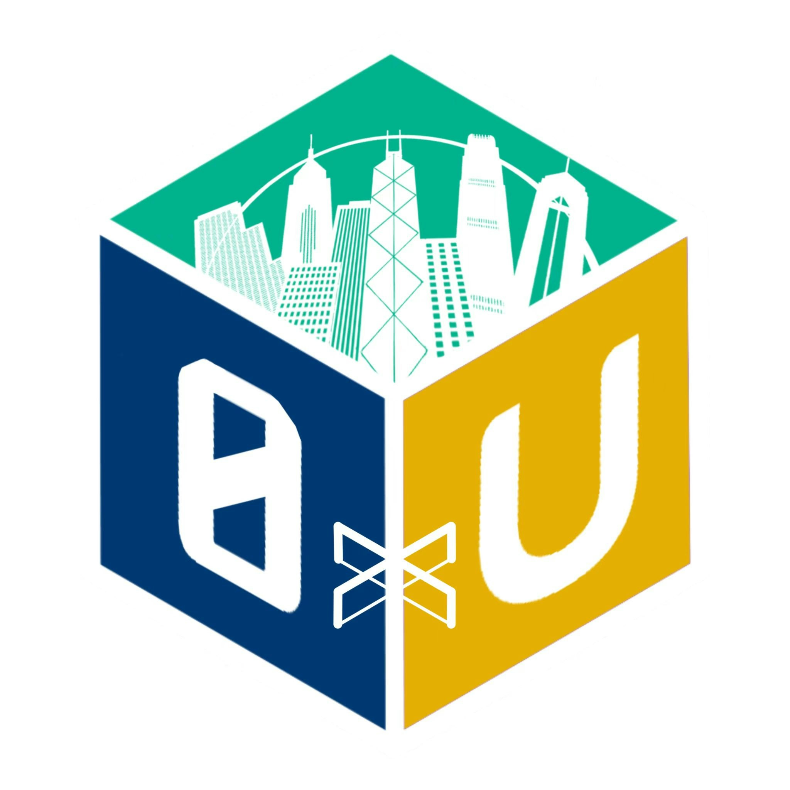
Jan — Apr 2025
Web3 Industry Researcher. Published market reports and analyzed 100+ protocols and tokens using DeFiLlama and CryptoSlam.
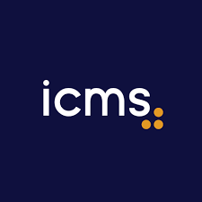
Oct 2023 — Mar 2025
Deputy National Executive Director, Hong Kong. Set direction, oversaw initiatives, and worked with diplomatic and corporate organizations on student events.
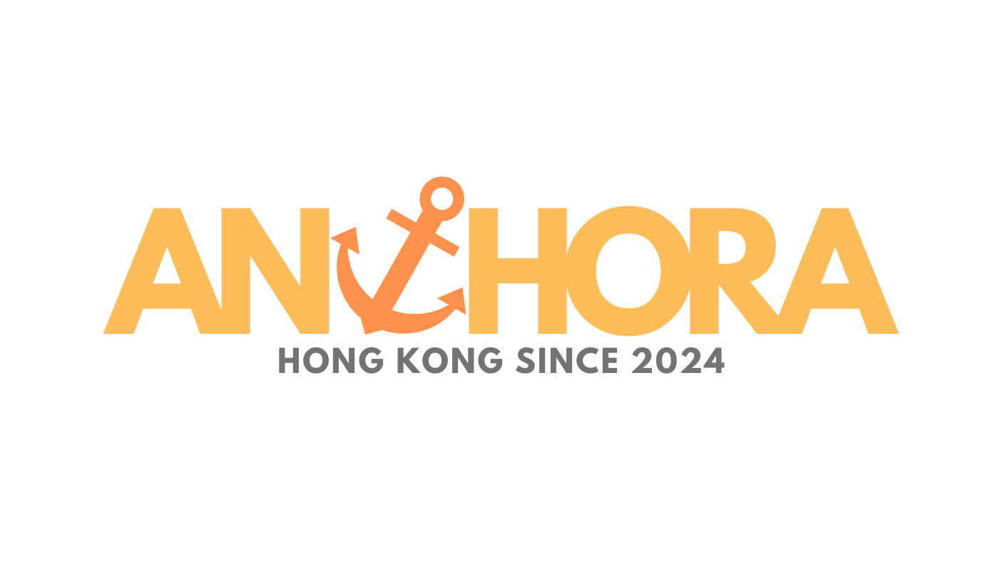
Feb — Nov 2024
Co-Founder & Chief Marketing Officer. Helped develop a mental-health AI platform for the Hong Kong and Mainland China markets.
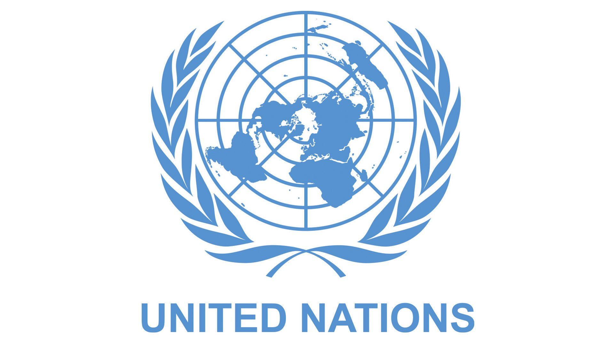
Aug 2024
United Nations Delegate. One of 3 CUHK Business School representatives selected to meet and network with 500+ delegates from 50 nations.
05 / Toolkit
Technical fluency, research instincts, and enough creative range to move between a spreadsheet, a market narrative, and a real human conversation.
Technical skills
Languages
Certifications